Examples¶
These examples use finance-datagen for deterministic market-like inputs and
finance-calcs for returns and technical indicators. The plotting functions
then consume ordinary pandas Series, Polars Series, or numpy arrays.
Return Path¶
fig = fp.plot_returns(returns)
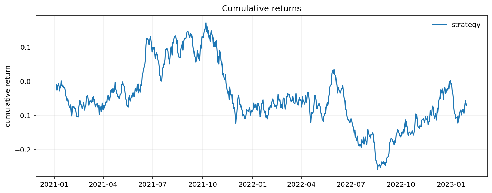
Return Path With Benchmark¶
fig = fp.plot_rolling_returns(
returns,
benchmark=benchmark,
live_start=returns.index[int(len(returns) * 0.7)],
)
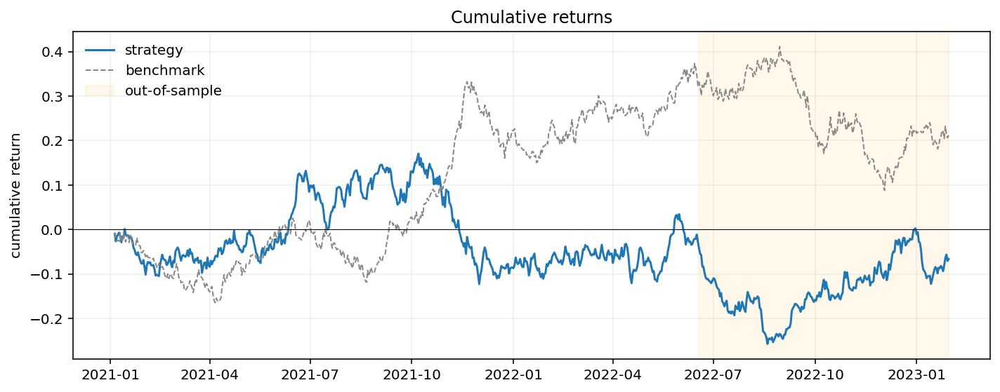
Rolling Volatility, Sharpe, and Beta¶
vol_fig = fp.plot_rolling_volatility(returns, window=63)
sharpe_fig = fp.plot_rolling_sharpe(returns, window=63)
beta_fig = fp.plot_rolling_beta(returns, benchmark, window=63)
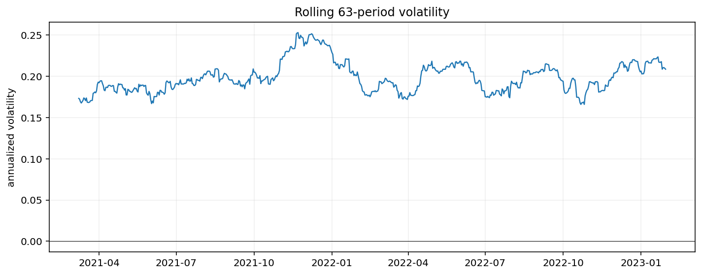
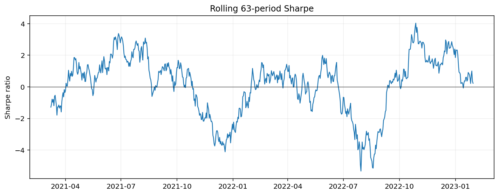
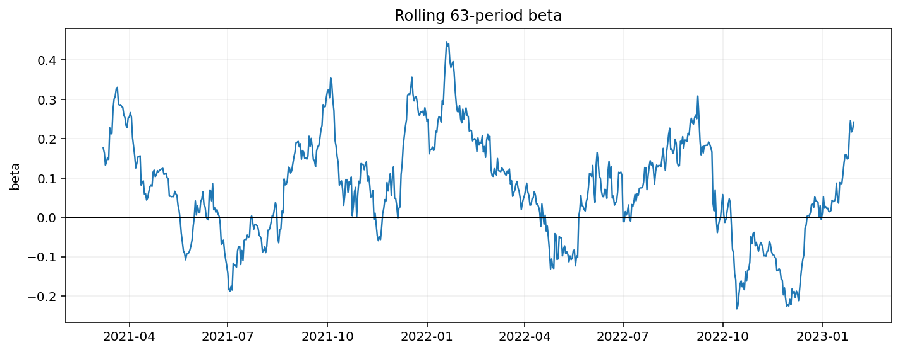
Benchmark Relationship¶
corr_fig = fp.plot_rolling_correlation(returns, benchmark, window=63)
scatter_fig = fp.plot_return_scatter(returns, benchmark)
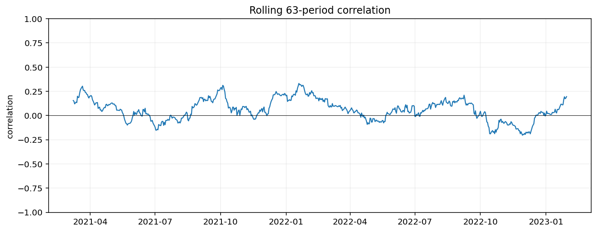
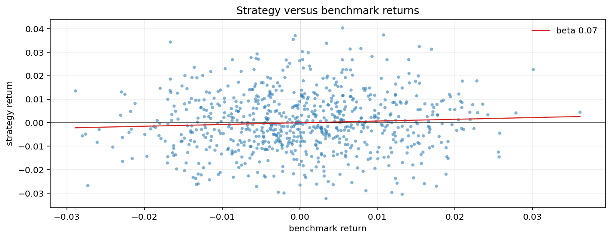
Drawdown¶
fig = fp.plot_drawdown_underwater(returns)
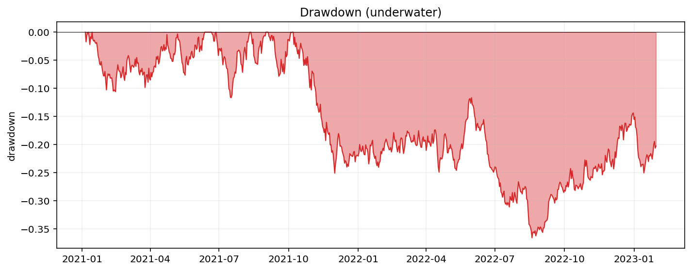
Return Heatmap¶
fig = fp.plot_returns_heatmap(returns, period="month")
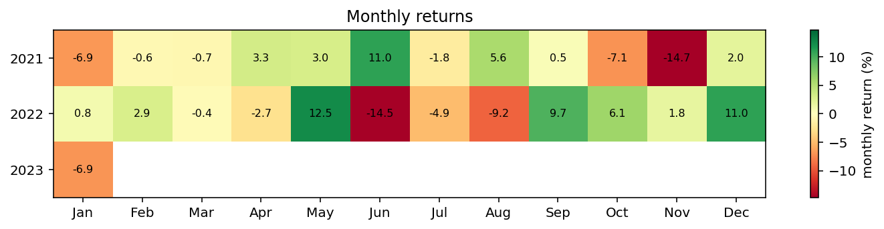
Quarterly and weekly buckets use the same function:
quarterly_fig = fp.plot_returns_heatmap(returns, period="quarter")
weekly_fig = fp.plot_returns_heatmap(returns, period="week")
Period Return Bar, Distribution, and Timeseries¶
annual_bar = fp.plot_returns_bar(returns, period="year")
monthly_dist = fp.plot_returns_dist(returns, period="month")
monthly_series = fp.plot_returns_timeseries(returns, period="month")
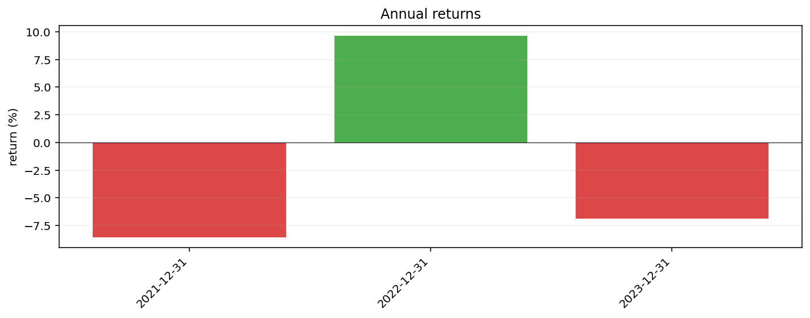
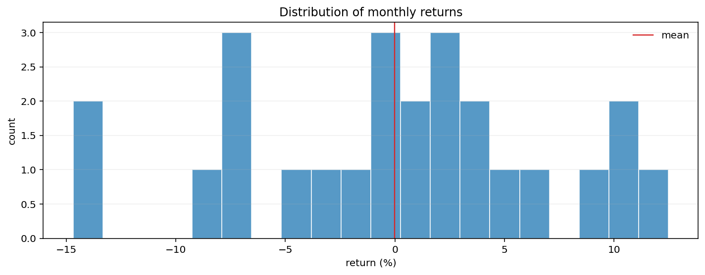
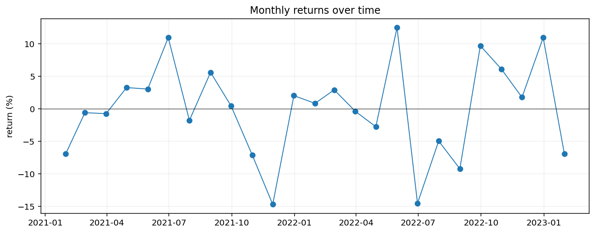
Price Overlays¶
fig = fp.plot_price_with_overlays(
price,
overlays=[("SMA 20", sma20), ("EMA 60", ema60)],
secondary_overlays=[("RSI 14", rsi14)],
secondary_ylabel="RSI",
title="ACME price with moving averages and RSI",
)
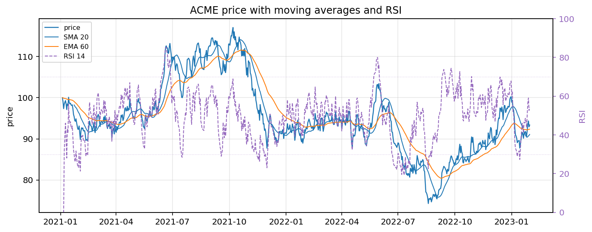
Indicator Panels¶
fig = fp.plot_indicator_panel(
price,
panels=[{"title": "MACD", "series": [("MACD", macd), ("Signal", macd_signal)]}],
title="ACME price and MACD",
)
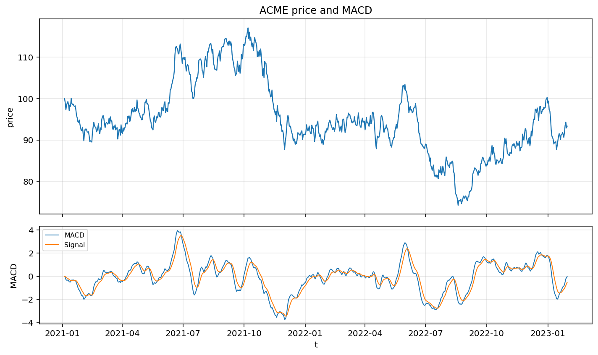
Performance Statistics¶
stats = fp.performance_statistics(returns)
Metric |
Value |
|---|---|
Cumulative return |
-6.64% |
Annualized return |
-2.26% |
Annualized volatility |
19.82% |
Sharpe ratio |
-0.02 |
Sortino ratio |
-0.02 |
Max drawdown |
-36.56% |
Calmar ratio |
-0.06 |
Performance Table¶
table = fp.table_performance_statistics(returns, benchmark=benchmark)
html = table.as_raw_html()
Metric |
Strategy |
Benchmark |
|---|---|---|
Cumulative return |
-6.64% |
21.19% |
Annualized return |
-2.26% |
6.62% |
Annualized volatility |
19.82% |
16.68% |
Sharpe ratio |
-0.02 |
0.47 |
Sortino ratio |
-0.02 |
0.68 |
Max drawdown |
-36.56% |
-22.92% |
Calmar ratio |
-0.06 |
0.29 |
Period Return Table¶
period_table = fp.table_period_returns(returns, period="year")
Period |
Return |
|---|---|
2021 |
-8.56% |
2022 |
9.66% |
2023 |
-6.89% |
Drawdown Table¶
drawdown_table = fp.table_drawdowns(returns, top=5)
Rank |
Start |
Trough |
Recovery |
Drawdown |
Duration |
|---|---|---|---|---|---|
1 |
2021-10-07 |
2022-08-19 |
Unrecovered |
-36.56% |
480 |
2 |
2021-06-27 |
2021-07-17 |
2021-08-11 |
-11.64% |
45 |
3 |
2021-01-14 |
2021-02-14 |
2021-06-12 |
-10.57% |
149 |
4 |
2021-09-03 |
2021-09-18 |
2021-10-04 |
-7.83% |
31 |
5 |
2021-08-12 |
2021-08-21 |
2021-09-01 |
-5.70% |
20 |
Post-Trade Plots¶
cost_fig = fp.plot_trading_cost_breakdown_bar(cost_breakdown)
mae_mfe_fig = fp.plot_mfe_mae_scatter(trades_with_excursions)
execution_fig = fp.plot_execution_quality(execution_quality)
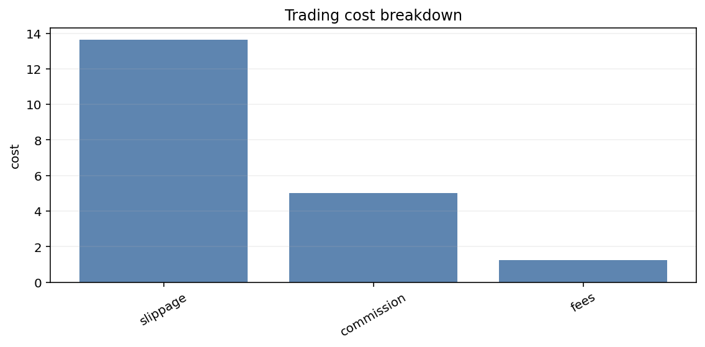
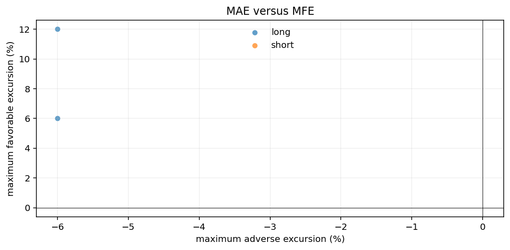
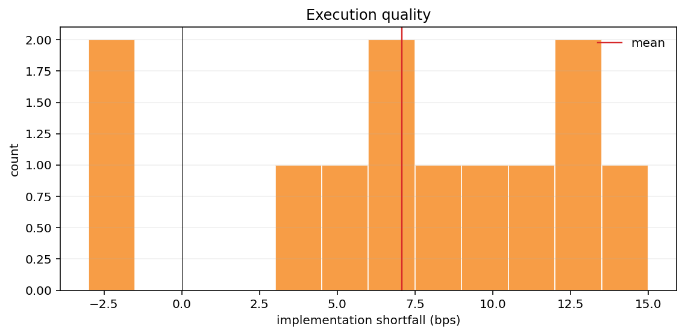
Post-Trade Tables¶
cost_table = fp.table_cost_breakdown(cost_breakdown)
round_trip_table = fp.table_round_trip_stats(round_trips)
execution_table = fp.table_execution_quality(execution_quality)
Component |
Total |
Pct total |
|---|---|---|
commission |
5.00 |
25.15% |
fees |
1.25 |
6.29% |
slippage |
13.63 |
68.56% |
Metric |
Value |
|---|---|
Trades |
3.00 |
Win rate |
66.67% |
Average PnL |
160.00 |
Total PnL |
480.00 |
Profit factor |
3.00 |
Payoff ratio |
1.50 |
Metric |
Value |
|---|---|
Count |
12 |
Mean bps |
7.08 |
Median bps |
7.50 |
Worst bps |
15.00 |
Best bps |
-3.00 |
Alpha IC Plots¶
ic_ts_fig = fp.plot_ic_ts(ic)
ic_hist_fig = fp.plot_ic_hist(ic)
ic_qq_fig = fp.plot_ic_qq(ic)
ic_group_fig = fp.plot_ic_by_group(ic_by_group.to_pandas())
ic_heatmap_fig = fp.plot_ic_heatmap(ic, period="month")
rolling_ic_fig = fp.plot_rolling_ic(ic, window=21)
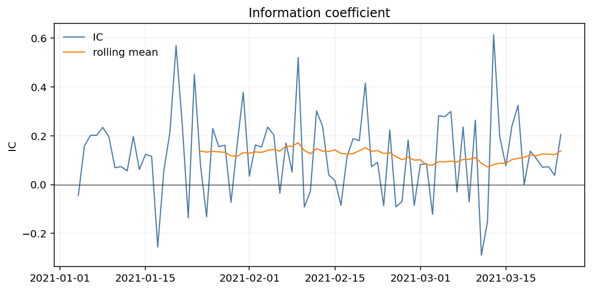
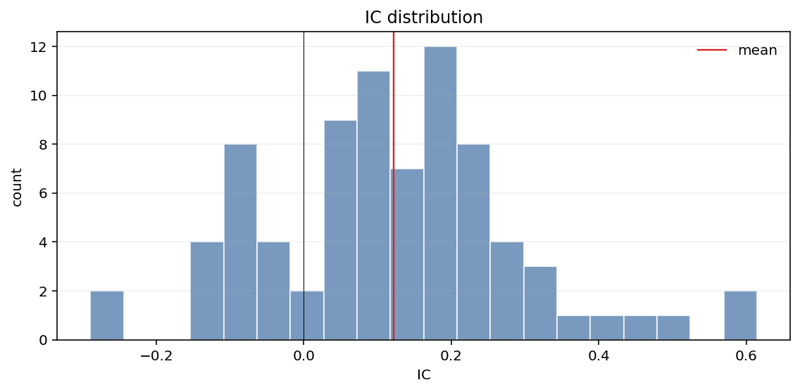
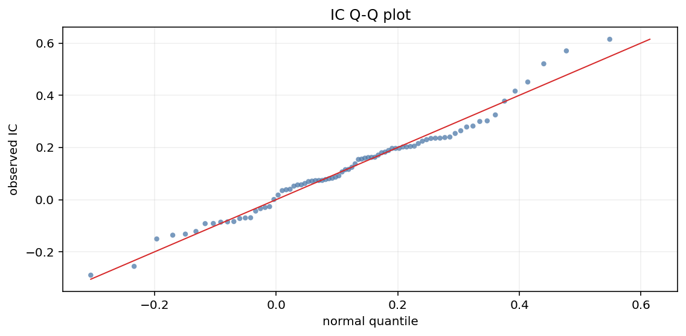
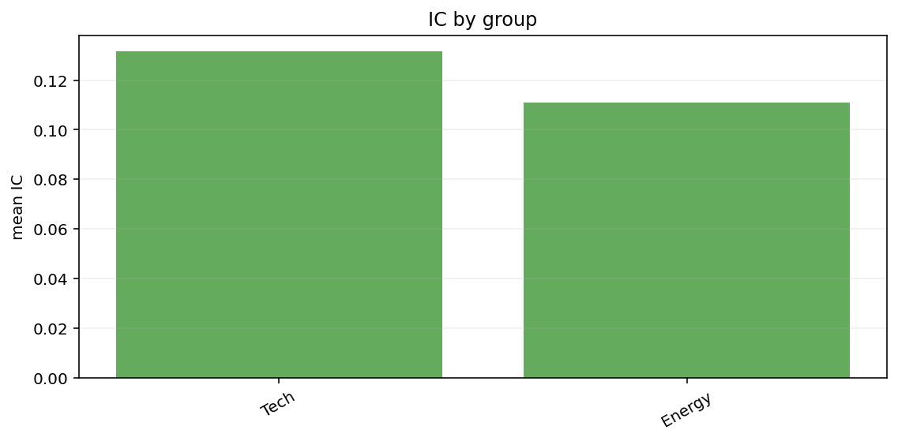
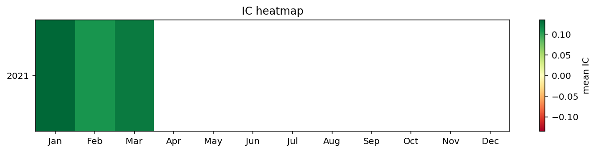
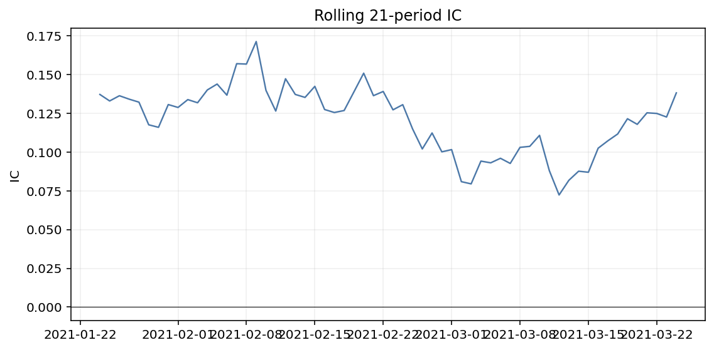
Alpha Quantile Plots¶
quantile_bar_fig = fp.plot_quantile_returns_bar(alpha_frame)
turnover_fig = fp.plot_top_bottom_quantile_turnover(alpha_frame)
factor_return_fig = fp.plot_cumulative_factor_returns(factor_returns)
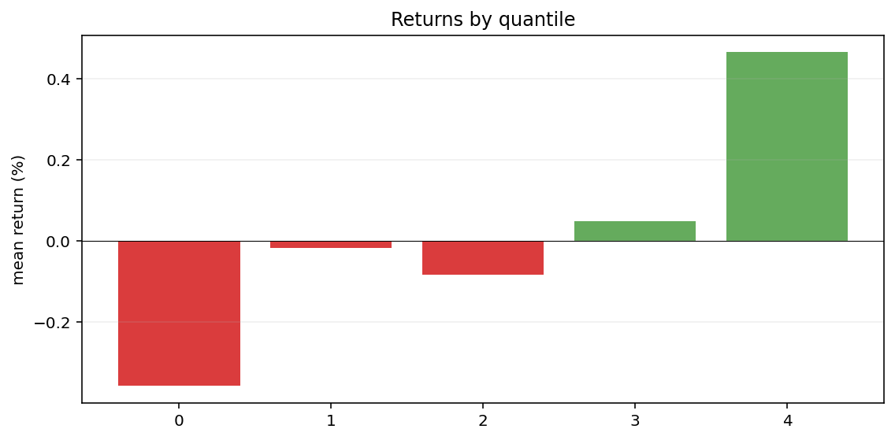
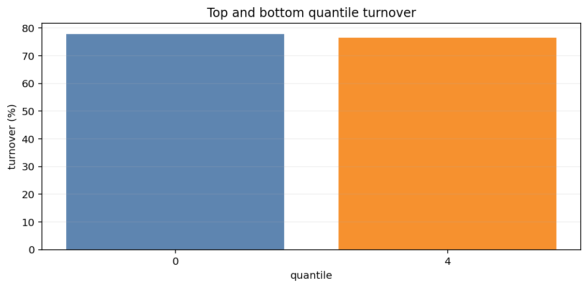
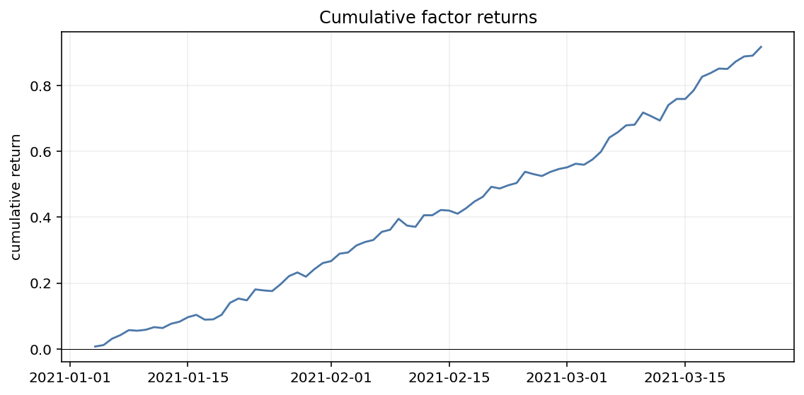
Alpha Analysis Tables¶
information_table = fp.table_information(ic)
quantile_return_table = fp.table_returns_by_quantile(alpha_frame)
turnover_table = fp.table_turnover(alpha_frame)
quantile_stats_table = fp.table_quantile_statistics(alpha_frame)
Metric |
Value |
|---|---|
Mean IC |
0.12 |
IC volatility |
0.17 |
ICIR |
0.71 |
t-stat |
6.38 |
Positive IC |
77.50% |
Observations |
80 |
Quantile |
Count |
Mean return |
Volatility |
|---|---|---|---|
0 |
80 |
-0.36% |
0.75% |
1 |
80 |
-0.02% |
0.70% |
2 |
80 |
-0.08% |
0.74% |
3 |
80 |
0.05% |
0.70% |
4 |
80 |
0.47% |
0.65% |
Quantile |
Turnover |
|---|---|
0 |
77.81% |
1 |
78.12% |
2 |
78.28% |
3 |
78.59% |
4 |
76.56% |
Quantile |
Count |
Signal mean |
Signal std |
|---|---|---|---|
0 |
640 |
-1.40 |
0.21 |
1 |
640 |
-0.53 |
0.19 |
2 |
640 |
0.01 |
0.18 |
3 |
640 |
0.53 |
0.16 |
4 |
640 |
1.38 |
0.24 |
Generate Every Example Artifact¶
Use the packaged helper when you want all examples written to disk:
from finance_plots.gallery import generate_gallery
outputs = generate_gallery("docs/assets/gallery")